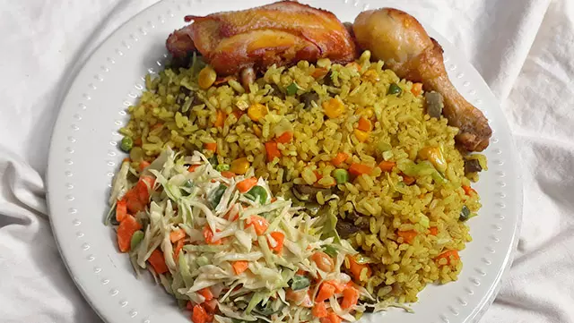

Fried rice

Description
A vibrant blend of parboiled long-grain rice, stir-fried in a rich mix of vegetable oil, fragrant curry powder,
and thyme, producing a distinct yellowish hue. Packed with sautéed liver, chicken gizzards, chopped carrots,
green beans, sweet corn, and green peppers, this savory dish is simmered with chicken stock for a deeply
flavorful experience.
Ingredients
- 2-4 cups of cold cooked Rice
- 300g liver of cow1
- 2 cups total chopped veggies
- 2 tablespoons curry powder
- ½ teaspoon thyme, garlic, and cayenne pepper or fresh pepper
- 200ml vegetable oil
- chicken stock (for boiling rice)
Steps
- Prepare the Rice. Use cold, pre-cooked rice to ensure a fluffy texture. If using fresh, allow it to cool
entirely.
- Heat oil in a wok or large pan on high heat. Add diced onions, garlic, and ginger, frying until fragrant.
- Add firmer vegetables like carrots and green beans first, followed by softer veggies like sweet corn, peas,
and green peppers, stirring for 2-3 minutes to keep them crunchy.
- Add sliced sausages, liver, or shrimp, stirring for 2 minutes until cooked.
- Add the rice, curry powder, thyme, and seasonings (soy sauce, stock cubes, or salt). Stir-fry on high heat
for 3-5 minutes until the rice is heated through and well-combined.
- Turn off the heat and mix in sliced spring onions for fresh flavor.
Home